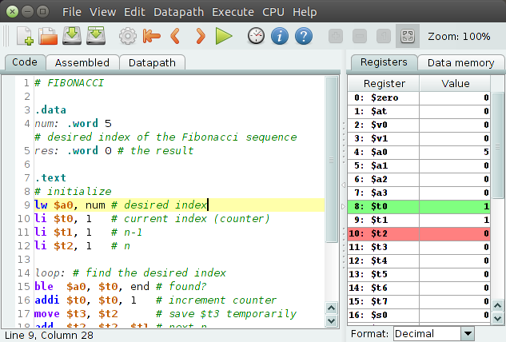
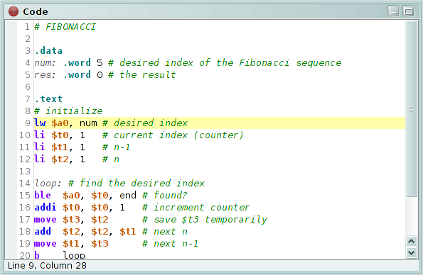
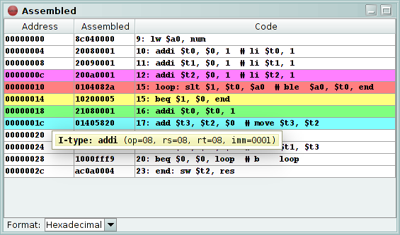
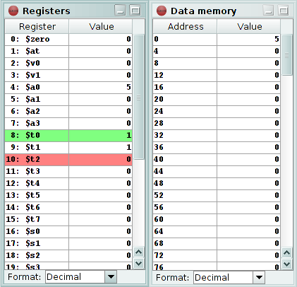
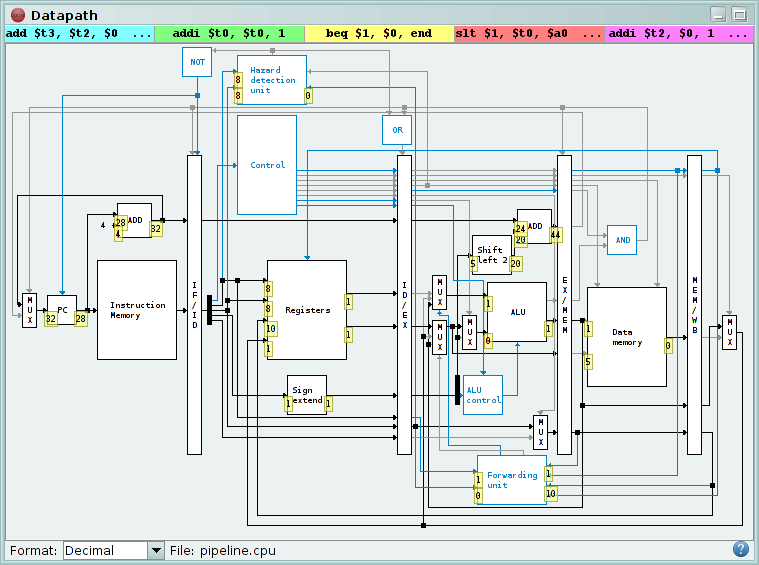
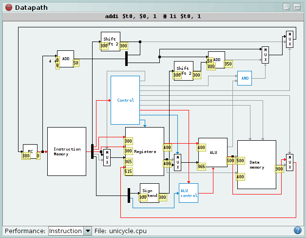

Conteúdos
- 1. Introdução
- 2. Composição da Interface Gráfica
-
3. Separadores/Janelas
- 3.1. Código
- 3.2. Código Máquina
- 3.3. Registos e Memória de Dados
- 3.4. Caminho de Dados
1. Introdução
O DrMIPS é um simulador do processador MIPS. Este permite seguir a execução de um programa em assembly passo-a-passo. Uma representação gráfica do caminho de dados permite ver como o processador funciona internamente.
Este manual é um curto guia de como usar o simulador, focando-se na versão para PC. A secção 2 fornece uma visão geral da interface gráfica. A secção 3 explica a interface dos separadores/janelas do simulador e como os utilizar.
2. Composição da Interface Gráfica
A interface gráfica do simulador DrMIPS é composta pela barra de menus, pela barra de ferramentas e pela área onde os conteúdos principais do simulador são mostrados. Os ícones na barra de ferramentas são atalhos para algumas acções usadas frequentemente nos menus. Pode pairar o cursor do rato sobre cada ícone para descobrir o que faz.
A interface é mostrada com um tema claro, por omissão. Mas pode mudar para o tema escuro ao seleccionar Ver > Tema escuro no menu. O DrMIPS suporta múltiplos idiomas, portanto estes nomes podem ser diferentes. Pode escolher outro idioma no menu Ver > Idioma.
Os conteúdos principais do simulador são divididos em separadores, por omissão. Cada separador pode ser posicionado no lado esquerdo da janela ou no lado direito. Pode mover um separador para o outro lado se clicar com o botão direito do rato no separador e seleccionar Mudar de lado no menu que aparece. Se, em vez disso, preferir ver os conteúdos divididos em janelas, pode fazê-lo seleccionando Ver > Janelas internas no menu. As posições e tamanhos dos separadores/janelas são recordadas ao sair.
Os separadores ou janelas mostrados são:
- Código: o editor de código, onde pode criar ou editar um programa em assembly para ser executado pelo simulador.
- Código máquina: após o código máquina ser gerado com sucesso, este mostra as instruções máquina resultantes.
- Registos: lista todos os registos e seus valores.
- Memória de dados: mostra todos os valores na memória de dados.
- Caminho de dados: a representação gráfica do caminho de dados, e o seu estado, é mostrada aqui.
3. Separadores/Janelas
3.1. Código
Este é o editor de código, onde pode escrever um programa em assembly. O editor mostra os números das linhas e realça a sintaxe válida.
Pode desfazer/refazer alterações, cortar/copiar/colar texto e procurar/substituir palavras no código. Estas acções podem ser acedidas pelo menu Editar ou com um clique com o botão direito do rato no editor. O código pode ser gravado para ou lido de um ficheiro. Estas acções estão disponíveis no menu Ficheiro.
Pode premir Ctrl+Espaço para auto-completar a palavra que está a escrever. Ao fazer isso será mostrada uma lista de instruções, pseudo-instruções, directivas e etiquetas que podem completar essa palavra. Também será mostrada uma janela que explica o que a palavra seleccionada na lista faz e como é usada. Ao premir Ctrl+Espaço num espaço vazio serão listadas todas as instruções, pseudo-instruções, directivas e etiquetas disponíveis. Também pode ver esta informação no menu CPU > Instruções suportadas.
Após escrever um programa em assembly, terá de o converter em código máquina (i.e., "assemblar" o programa). Isto é feito seleccionando Executar > Gerar o código máquina no menu ou pressionando o respectivo botão na barra de ferramentas. Se o programa tiver erros, uma mensagem irá indicar o primeiro erro e um ícone de exclamação irá aparecer ao lado dos números das linhas que têm um erro. Pode pairar o cursor do rato sobre estes ícones para descobrir qual é o erro. Se o programa estiver correcto, nenhuma mensagem será mostrada e pode prosseguir para o executar.
3.2. Código Máquina
Após o código máquina ser gerado com sucesso, as instruções máquina resultantes serão mostradas aqui numa tabela.
Cada linha da tabela corresponde a uma instrução máquina, contendo o seu endereço, código máquina e instrução original. A instrução a ser executada no momento é realçada.
Se estiver a simular um processador pipeline, todas as instruções que estão no pipeline são realçadas com diferentes cores, cada uma representando uma etapa diferente. As diferentes cores significam:
- Azul: etapa Instruction Fetch (IF).
- Verde: etapa Instruction Decode (ID).
- Amarelo: etapa Execute (EX).
- Vermelho: etapa Memory access (MEM).
- Magenta: etapa Write Back (WB).
Ao pairar o cursor do rato sobre uma instrução na tabela irá exibir uma dica. Esta dica mostra o tipo da instrução e os valores dos seus campos. Na versão para Android, toque na instrução para ver a sua dica.
Os valores são mostrados em formato decimal, por omissão. Pode alterar esse formato para binário ou hexadecimal usando a caixa de combinação no fundo do separador/janela. Esta caixa de combinação está disponível em todos os separadores/janelas, excepto no separador/janela de código.
Para controlar a simulação, pode usar o menu Executar ou a barra de ferramentas. Prima Passo para executar uma instrução, Passo atrás para reverter uma instrução, Executar para executar o programa inteiro e Reiniciar para reverter para a primeira instrução.
3.3. Registos e Memória de Dados
Estes dois separadores/janelas são bastante semelhantes. O separador/janela dos registos mostra os valores dos registos e do contador do programa, enquanto que o separador/janela da memória de dados mostra os valores na memória de dados.
Os valores que estão actualmente a ser acedidos são realçados em diferentes cores. As cores significam:
- Verde: o registo/endereço está a ser lido no banco de registos/memória de dados.
- Vermelho: o registo/endereço está a ser escrito no banco de registos/memória de dados.
- Amarelo: o registo/endereço está a ser lido e escrito no mesmo ciclo no banco de registos/memória de dados.
Pode editar o valor de qualquer registo ou endereço de memória fazendo
duplo-clique nele na respectiva tabela. Isto inclui o contador do programa.
Registos constantes (como o registo $zero) não podem ser editados.
Na versão para Android, toque durante alguns segundos no
registo/endereço para o editar.
Por omissão, os valores dos registos e da memória de dados são reiniciados sempre que o código máquina é gerado. Se não quiser que isto aconteça, desmarque Executar > Reiniciar dados antes de gerar cód. máquina no menu.
3.4. Caminho de Dados
A representação gráfica do caminho de dados do processador é exibida aqui. É aqui que pode ver como o CPU funciona internamente.
O DrMIPS pode simular vários caminhos de dados uniciclo e pipeline diferentes. O nome do caminho de dados a ser usado actualmente é mostrado no fundo deste separador/janela. Pode escolher outro caminho de dados seleccionando CPU > Carregar no menu. Note que caminhos de dados diferentes podem suportar instruções diferentes.
Os caminhos de dados fornecidos por omissão são:
-
Caminhos de dados uniciclo:
- unicycle.cpu: o caminho de dados uniciclo por omissão.
-
unicycle-no-jump.cpu:
variante mais simples do caminho de dados uniciclo que não
suporta a instrução
j(jump). - unicycle-no-jump-branch.cpu: uma variante ainda mais simples do caminho de dados uniciclo que não suporta jumps nem branches.
- unicycle-extended.cpu: uma variante os caminho de dados uniciclo que suporta algumas instruções adicionais, como multiplicações e divisões.
-
Caminhos de dados pipeline:
-
pipeline.cpu:
o caminho de dados pipeline por omissão, que implementa
resolução de conflitos. Os caminhos de dados pipeline não
suportam a instrução
j(jump). - pipeline-only-forwarding.cpu: variante do caminho de dados pipeline que, em termos de resolução de conflitos, só implementa atalhos (dando resultados errados).
- uma variante do caminho de dados pipeline que não implementa nenhum tipo de resolução de conflitos (dando resultados errados).
- pipeline-extended.cpu: uma variante que suporta algumas instruções adicionais, tal como o unicycle-extended.cpu.
-
pipeline.cpu:
o caminho de dados pipeline por omissão, que implementa
resolução de conflitos. Os caminhos de dados pipeline não
suportam a instrução
No topo do separador/janela, a instrução ou instruções actualmente a serem executadas são mostradas. Elas são realçadas com as mesmas cores explicadas na secção 3.2.
O caminho de dados é mostrado por baixo das instruções. Os componentes são representados por rectângulos ou quadrados, e as ligações por linhas que terminam em setas. As ligações que estão no caminho de controlo são mostradas a azul. O caminho de controlo pode ser ocultado se desmarcar Caminho de dados > Caminho de controlo no menu.
Ligações que são consideradas irrelevantes no ciclo de relógio actual são
mostradas em cinzento.
Uma ligação é considerada irrelevante se for um sinal de controlo colocado a
0, se o seu valor for ignorado por um componente, se for a saída da
unidade de detecção de conflitos e não estiver a ocorrer um
protelamento, etc.
Pode ocultar as setas no fim das ligações desmarcando
Caminho de dados > Setas nas ligações no menu.
Os valores em algumas entradas e saídas importantes de alguns componentes são mostrados no caminho de dados como umas pequenas "dicas" com fundo amarelo. Pode pairar o cursor do rato sobre estas "dicas" para descobrir qual é o identificador da entrada/saída. O menu Caminho de dados > Dados nas entradas e saídas contém algumas opções para controlar estas "dicas": Activar para as mostrar/ocultar, Mostrar os nomes para mostrar os nomes das entradas/saídas e Mostrar para todos os componentes para mostrar as "dicas" em todos os componentes.
Ao pairar o cursor do rato sobre um componente, uma dica com alguns detalhes sobre o mesmo será mostrada. A dica apresenta o nome do componente, uma descrição do que faz e os valores em todas as entradas e saídas. Na versão para Android, toque no componente para ver a sua dica.
O caminho de dados pode ser ampliado e reduzido. Isto pode ser feito pelas opções Caminho de dados > Ampliar, Caminho de dados > Reduzir e Caminho de dados > Normal no menu ou pelos respectivos botões na barra de ferramentas. O nível de ampliação pode também ser ajustado automaticamente para ocupar todo o espaço disponível ao usar a opção Caminho de dados > Ajustar automaticamente.
O caminho de dados também pode ser mostrado num "modo de desempenho". Pode mudar para este modo seleccionando Caminho de dados > Modo de desempenho no menu. Neste modo, o desempenho do processador é simulado, e o caminho crítico é mostrado a vermelho.
Pode ver ou o caminho crítico da instrução que está actualmente a ser executada ou o caminho crítico global do CPU (independente da instrução). A caixa de combinação no fundo do separador/janela é usada para escolher entre estas duas opções.
Cada componente tem uma latência, que pode ser consultada na sua dica. A dica também mostra as latências acumuladas nas entradas (o tempo que demora para a entrada receber o valor correcto após a transição do relógio) e nas saídas (o tempo que o componente demora a gerar o valor correcto para a saída).
As latências dos componentes podem ser alteradas fazendo um duplo-clique
neles no modo de desempenho.
Para além disso, pode seleccionar
Caminho de dados > Restaurar latências no menu para
restaurar as latências de todos os componentes para os seus valores originais,
e Caminho de dados > Remover latências para colocar
todas as latências a 0.
Na versão para Android, toque durante alguns segundos no
componente no modo de desempenho para editar a sua latência.
Também pode ver algumas estatísticas sobre a simulação, como a frequência de relógio e o CPI, seleccionando Caminho de dados > Estatísticas no menu.